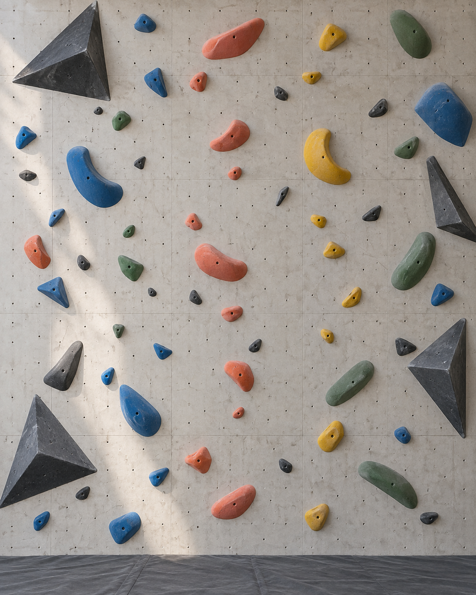

Attention
Points toward a region or relationship without revealing a move.
Product Design · HCI · Learning
Learn to see the climb.
A route-reading prototype that asks how much guidance helps someone learn without taking away the problem-solving.

The question
From the ground, a route can look like a sequence of colored objects. On the wall, it becomes a problem of balance, timing, body position, and choice.
BETA creates a small loop around that gap: predict a movement sequence, climb, record the sequence the body actually found, then reflect on what changed.
Hint, don’t solve.
The learning loop
Choose a sample route or upload a wall photo, then study it without an answer being shown.
Place left-hand, right-hand, left-foot, and right-foot markers, add arrows and notes, then order the imagined sequence.
After an attempt, record what actually happened while the body’s solution is still fresh.
Compare both paths with neutral language: what matched, what changed, and what was newly noticed?
Progressive guidance
Points toward a region or relationship without revealing a move.
Offers a movement idea, such as shifting the center of gravity.
Suggests a technique category, such as a flag or hip rotation.
Requires a deliberate press-and-hold before revealing the full suggestion.
Design choices
What we would test
Explore the work
Try the complete route-reading loop or inspect the React and TypeScript implementation.